1
Khóa brief
Chốt người xem, thông điệp, thời lượng, ngôn ngữ, tỷ lệ và CTA.
Asset sheet, voice-over và prompt
Một bộ tài liệu thực hành để chuẩn bị asset, khóa lời đọc, dựng từng cảnh và kiểm tra video bằng ChatGPT cùng Remotion.
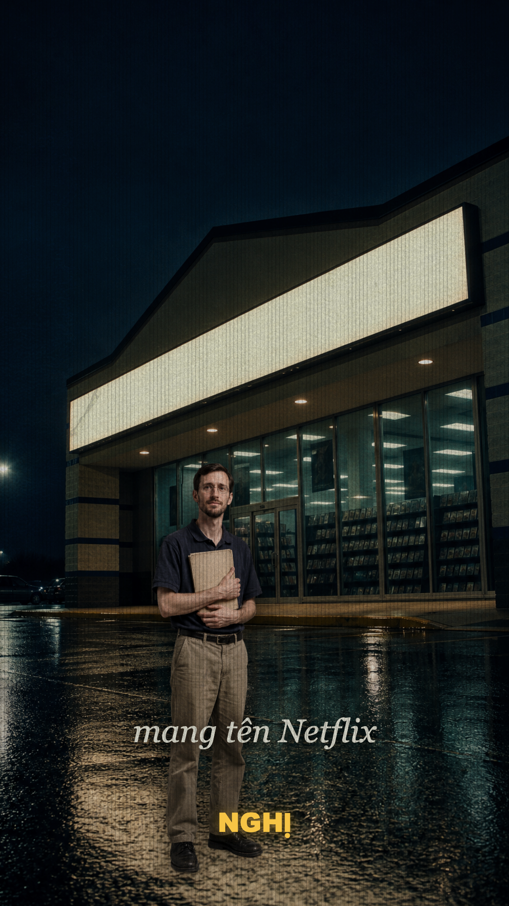
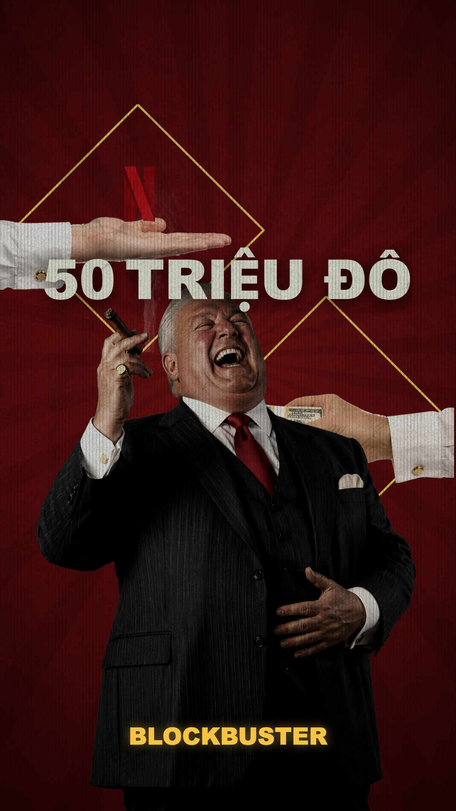
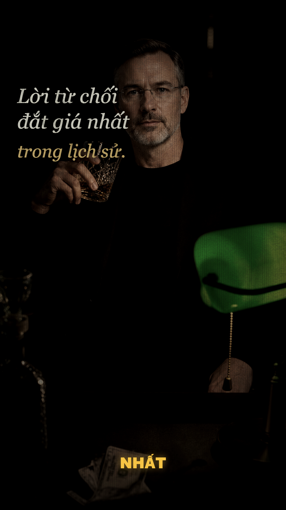
Video dùng cấu trúc tương phản: một lời từ chối nhỏ ở đầu dẫn đến kết quả rất lớn ở cuối. Voice-over là trục thời gian, hình ảnh và chữ bám theo từng khoảng nghỉ.
Mỗi phần có một đầu ra rõ ràng. Chỉ chuyển sang phần tiếp theo khi đầu ra hiện tại đã được duyệt.
Chốt người xem, thông điệp, thời lượng, ngôn ngữ, tỷ lệ và CTA.
Xác minh tên riêng, mốc năm, số tiền, doanh thu và cách diễn đạt.
Mỗi scene chỉ mang một ý. Câu ngắn, có khoảng nghỉ tự nhiên giữa các scene.
Xuất WAV hoặc MP3 rõ tiếng. Giữ bản gốc và không thay tốc độ sau khi đã chia scene.
Ghi tên file, kích thước, nền trong suốt, scene sử dụng và nhân vật tham chiếu.
Tạo ảnh theo từng scene. Kiểm tra nhân vật nhất quán trước khi đưa vào mã nguồn.
Mở từng composition Scene1 đến Scene5. Duyệt bố cục trước, sau đó mới tinh chỉnh chuyển động.
Cắt scene giữa khoảng nghỉ, đồng bộ caption theo lời đọc và giữ audio chạy liên tục.
Xuất ảnh đúng thời điểm headline, con số và nhân vật xuất hiện để phát hiện lỗi nhanh.
Xuất video, mở file đã render, kiểm tra hình, tiếng, caption và ba giây cuối.
Dùng prompt này sau khi đã đặt toàn bộ asset và audio vào đúng thư mục. AI sẽ kiểm kê trước, dựng sau và không tự thay nội dung đã khóa.
Tôi muốn dựng một video dọc Netflix Reel bằng Remotion dựa trên asset và audio đã chuẩn bị trong project/public/assets.
Mục tiêu:
- Kể câu chuyện Netflix từng đề nghị Blockbuster mua lại với giá 50 triệu đô, bị từ chối, sau đó phát triển mạnh.
- Phong cách tài liệu điện ảnh, texture giấy, cut-out, film grain, typography serif nghiêng kết hợp sans đậm.
- Khung hình 1080 × 1920, 30 fps.
- Bản tiếng Việt gồm 5 scene kể chuyện và một CTA riêng.
Quy tắc làm việc:
1. Đọc toàn bộ README, engine, asset map, caption data và các scene hiện có trước khi sửa.
2. Kiểm kê asset. Báo file thiếu, file dự phòng và file đang được sử dụng.
3. Đo chính xác thời lượng audio. Tìm khoảng nghỉ để đề xuất điểm cắt scene.
4. Lập beat map gồm thời gian, voice-over, chữ trên màn hình, asset và chuyển động.
5. Giữ một composition tiếng Anh tên Reel, một composition tiếng Việt tên ReelVI và CTA riêng.
6. Dựng từng scene độc lập để có thể xem riêng trong Remotion Studio.
7. Không ghi đè asset tốt. File thử nghiệm phải có hậu tố v2 hoặc v3.
8. Không tạo lại ảnh nếu asset phù hợp đã có.
9. Nhân vật Reed ở Scene 1, Scene 5 và ảnh kết phải là cùng một người ở các độ tuổi khác nhau.
10. Nhân vật Blockbuster ở Scene 2 và Scene 4 phải là cùng một người trước và sau thất bại.
11. Dùng frame, interpolate và spring của Remotion cho chuyển động. Không dùng CSS animation chạy theo thời gian thực.
12. Sau mỗi scene, render một frame đại diện để tôi duyệt.
13. Chỉ render toàn bộ video sau khi dữ liệu, caption, hình và CTA đã được duyệt.
Tôi là người không chuyên. Hãy tự thực hiện thao tác kỹ thuật, giải thích bằng tiếng Việt dễ hiểu và chỉ hỏi khi cần một quyết định nội dung.Nghe trực tiếp từng file. Thời lượng được đọc từ file thật trong dự án, không phải ước lượng.
assets/audio/vi-netflix-vo.wav | 35,130958 giây
assets/audio/vo.wav | 32,970958 giây
Reel. Caption tiếng Anh có timestamp theo từng từ trong caption-data.ts.assets/cta/vo-cta.wav | 19,330958 giây
Đọc ở tốc độ tự nhiên, không cố ép đúng số giây. Giữ khoảng nghỉ 0,3 đến 0,8 giây giữa hai ý. Không dùng nhạc nền chung trong file voice-over. Xuất WAV 44,1 kHz hoặc 48 kHz. Sau khi thay file, yêu cầu AI đo lại thời lượng và khoảng nghỉ trước khi thay timeline.
Tất cả asset đang nằm trong project/public/assets. Ảnh có nền trong suốt được đặt trên nền caro để dễ kiểm tra viền cắt.
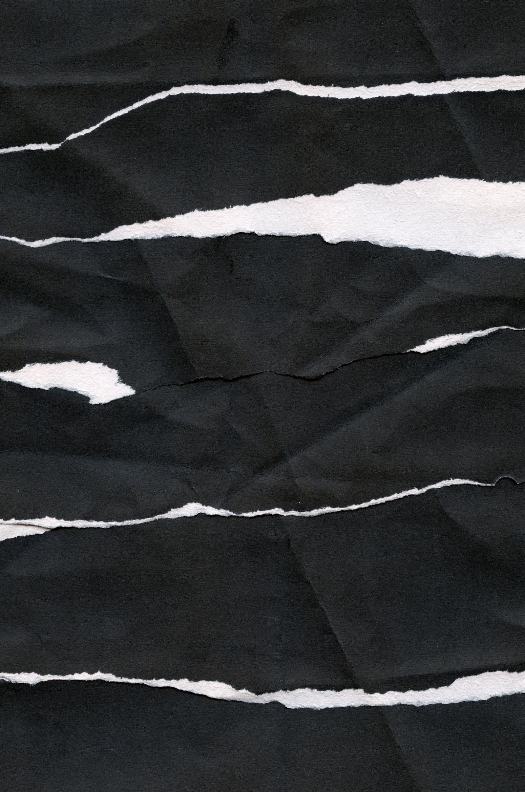
shared/bg_black.jpg1600 × 2413 | nền Scene 4shared/bg_paper.jpg1600 × 1067 | nền Scene 1shared/grain.jpg2048 × 2048 | lớp filmshared/grunge.jpg2048 × 2048 | lớp hao mònshared/logo_netflix_n.svgVector | Scene 2shared/logo_netflix_word.png2226 × 678 | nhận diệnshared/logo_blockbuster.svgVector | nhận diện cửa hàng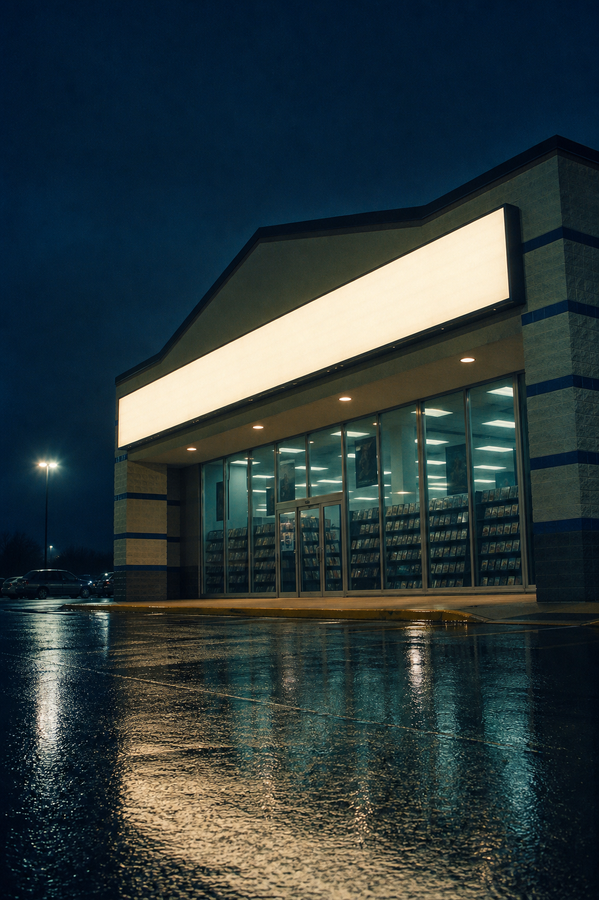
scene1/store.png1024 × 1536 | bối cảnh đầuscene1/reed-young.png734 × 1518 | cut-outscene1/gold-frame.png1024 × 1536 | khung xuyên cảnhscene1/cloud1.png1536 × 1024 | lớp mây gầnscene1/cloud2.png1536 × 1024 | lớp mây xascene2/boss-laughing.png1012 × 1491 | cut-out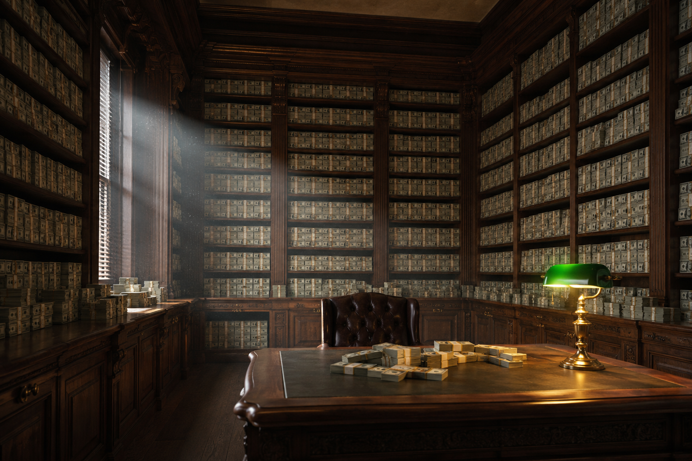
scene2/money-room.png1536 × 1024 | bối cảnh dự phòngscene2/hand-logo.png1273 × 392 | cut-outscene2/hand-cash.png1445 × 524 | cut-outscene2/smoke.png1024 × 1536 | alpha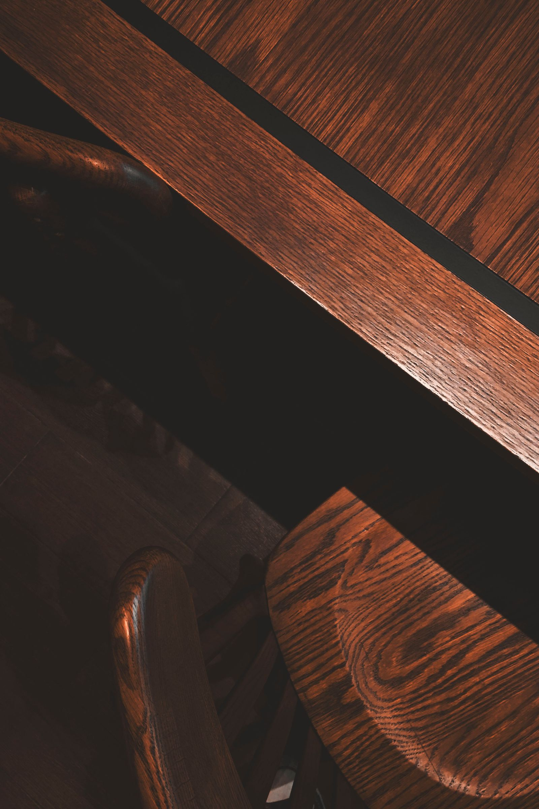
scene3/desk.jpg1600 × 2400 | nền Scene 3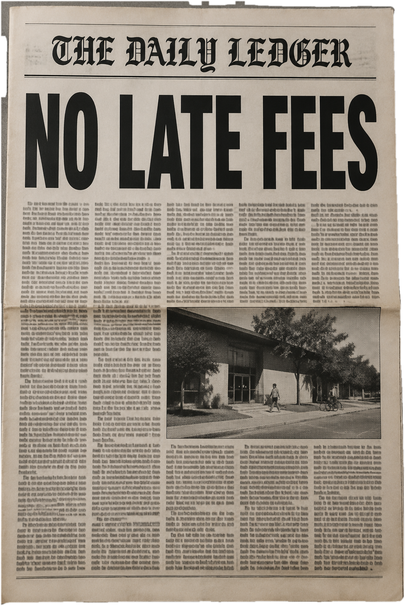
scene3/news-late-fees.png1006 × 1502 | cut-out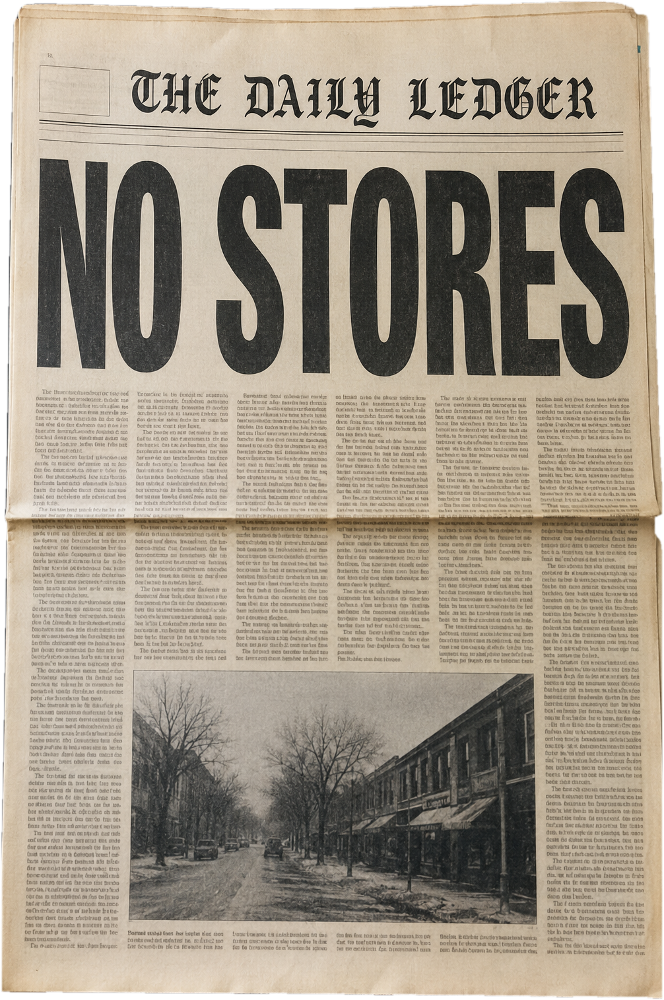
scene3/news-no-stores.png1006 × 1514 | cut-out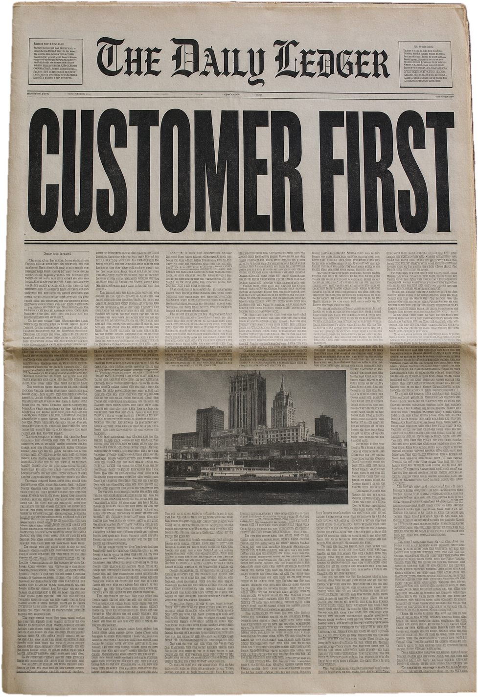
scene3/news-customer-first.png977 × 1425 | cut-outscene4/boss-defeated.png870 × 1467 | cùng người Scene 2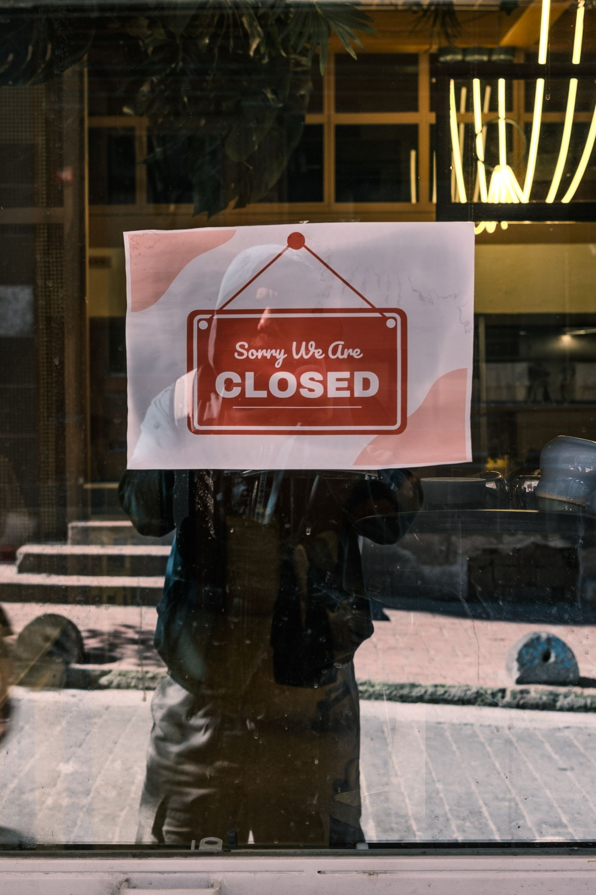
scene4/closed-sign.jpg1600 × 2400 | tư liệu phụscene4/chain-lock.jpg1600 × 2400 | tư liệu phụ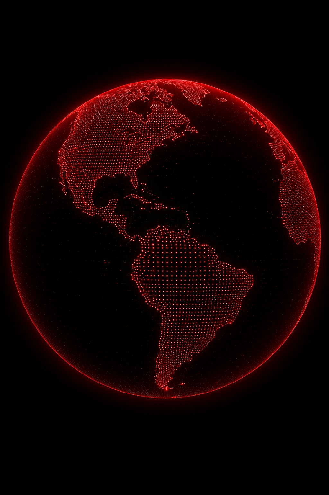
scene5/globe.png1024 × 1536 | nền phát sángscene5/reed-triumph.png846 × 1490 | cùng người Scene 1scene6/reed-rich-v2.png941 × 1672 | ảnh kết hiện tại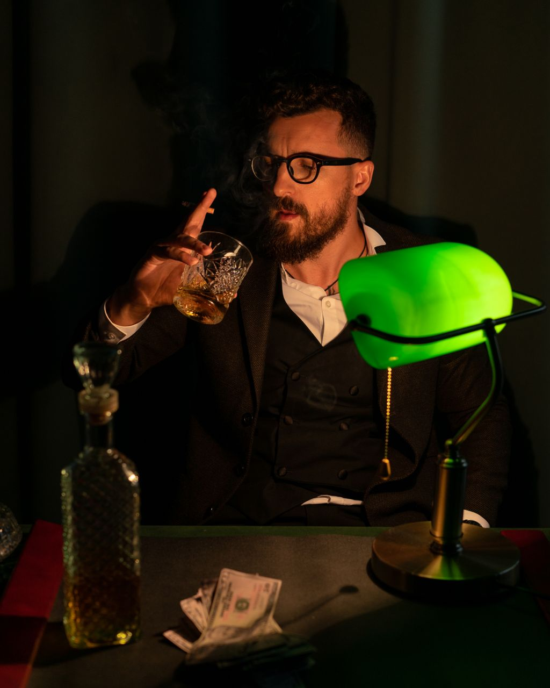
scene6/reed-rich.jpg1024 × 1280 | bản cũcta/son-studio.jpeg2752 × 1536 | ảnh CTAMở bằng ảnh treo trên tường giấy. Máy quay tiến xuyên qua khung, ảnh từ đen trắng chuyển thành màu, nhân vật trẻ đứng trước cửa hàng.
“Năm 2000, một startup nhỏ tên Netflix đã đề nghị Blockbuster mua lại họ.”
scene1/store.pngscene1/reed-young.pngscene1/cloud1.pngscene1/cloud2.pngshared/bg_paper.jpgshared/logo_blockbuster.svg (tùy chọn)Tạo bộ asset cho Scene 1 của video dọc 9:16, phong cách documentary cinematic năm 2000.
Asset A: cửa hàng cho thuê băng đĩa ban đêm, góc chính diện hơi thấp, biển hiệu để trống để ghép logo sau, ánh đèn vàng cũ, đường phố tối, không có người, bố cục dọc 1024 × 1536.
Asset B: người đàn ông Mỹ khoảng 39 tuổi, tóc tối màu, trang phục doanh nhân giản dị năm 2000, đứng thẳng, nhìn về phía cửa hàng, toàn thân, ánh sáng khớp cảnh đêm, nền trong suốt, không cắt đầu hoặc chân.
Asset C và D: hai lớp mây trắng xám khác mật độ, nền đen sạch hoặc alpha, không có chữ.
Yêu cầu nhận diện: lưu Asset B làm ảnh tham chiếu nhân vật cho Scene 5 và ảnh kết. Không thêm logo, chữ hoặc watermark vào ảnh.Hãy dựng Scene 1 bằng các asset đã có trong project/public/assets/scene1 và shared.
Thời lượng bản Việt: 168 frame tại 30 fps.
Voice-over: “Năm 2000, một startup nhỏ tên Netflix đã đề nghị Blockbuster mua lại họ.”
Bố cục và chuyển động:
1. Bắt đầu bằng texture giấy sáng và một ảnh đen trắng treo giữa tường.
2. Hiển thị “NĂM 2000” dưới ảnh, kiểu chữ serif, rõ nhưng không lấn ảnh.
3. Máy quay tiến chậm trong nửa đầu, sau đó tăng tốc bay xuyên qua khung.
4. Khi ảnh phủ toàn màn hình, chuyển từ đen trắng sang màu trong khoảng 12 frame.
5. Dùng hai lớp mây trôi khác tốc độ để tạo chiều sâu.
6. Nhân vật reed-young đứng giữa gần đáy, chỉ rung rất nhẹ theo nhịp 12 fps.
7. Hiển thị lần lượt “một startup nhỏ” và “mang tên Netflix” theo câu đọc.
8. Dùng Img cho ảnh, interpolate và spring cho chuyển động. Không dùng CSS animation.
9. Render một frame lúc ảnh còn trong khung và một frame sau khi ảnh đã phủ toàn màn hình để kiểm tra.Hai bàn tay đưa logo và tiền vào khung hình trên nền đỏ. Con số quay như máy slot, sau đó nhân vật Blockbuster bật lên và cười nhạo.
“Mức giá chỉ là 50 triệu đô. Nhưng Blockbuster đã cười nhạo và đuổi họ khỏi phòng.”
scene2/boss-laughing.pngscene2/hand-logo.pngscene2/hand-cash.pngscene2/smoke.pngshared/logo_netflix_n.svgTạo bộ cut-out cho Scene 2 trên nền trong suốt.
Asset A: giám đốc công ty cho thuê video khoảng 45 đến 55 tuổi, vest doanh nhân cuối thập niên 1990, đang ngả người cười lớn, cầm xì gà, toàn thân, ánh sáng sân khấu đỏ vàng, biểu cảm tự tin thái quá.
Asset B: cánh tay và bàn tay mở đi từ trái sang phải, lòng bàn tay hướng lên để đặt logo, không có logo sẵn.
Asset C: cánh tay đi từ phải sang trái, bàn tay nắm một xấp tiền đô, góc nhìn phù hợp để hai bàn tay đối đầu nhau.
Asset D: luồng khói xì gà tách nền, mềm ở phần đỉnh, không có khung đen.
Yêu cầu: toàn bộ cut-out phải đủ vùng biên, không cắt bàn tay, không watermark. Lưu khuôn mặt Asset A làm tham chiếu để tạo phiên bản thất bại sau 10 năm ở Scene 4.Hãy dựng Scene 2 bằng asset hiện có, thời lượng 190 frame tại 30 fps cho bản Việt.
Voice-over: “Mức giá chỉ là 50 triệu đô. Nhưng Blockbuster đã cười nhạo và đuổi họ khỏi phòng.”
Yêu cầu:
1. Dùng nền đỏ tối dạng sunburst, không thêm ảnh nền mới.
2. Tay cầm logo đi vào từ trái, tay cầm tiền đi vào từ phải. Mỗi tay có một khung kim cương màu vàng được vẽ theo thời gian.
3. Con số trung tâm phải kết thúc chính xác ở “50 TRIỆU ĐÔ”. Kiểm tra không có “nghìn tỷ”, “trillion” hoặc đơn vị sai trong bản Việt.
4. Cho boss-laughing đi lên từ đáy bằng spring, tăng nhẹ kích thước để tạo cảm giác ngạo mạn.
5. Gắn smoke vào đúng đầu xì gà, cho khói bay lên và lệch nhẹ theo thời gian.
6. Hiển thị “cười nhạo”, sau đó “đuổi khỏi phòng” trong hộp vàng.
7. Kết cảnh bằng ba chớp ngắn, giảm màu nhân vật và tăng tương phản.
8. Render frame đúng lúc “50 TRIỆU ĐÔ” dừng và frame lúc boss xuất hiện để duyệt.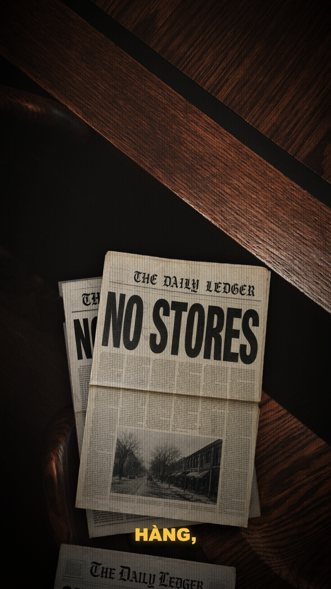
Một bàn gỗ tối làm nền. Ba trang báo rơi vào theo ba ý: không phí trả muộn, không cửa hàng và khách hàng là ưu tiên.
“Vì vậy, Netflix xây dựng một mô hình hoàn toàn ngược lại: không phí trả muộn, không cửa hàng, khách hàng là ưu tiên số một.”
scene3/desk.jpgscene3/news-late-fees.pngscene3/news-no-stores.pngscene3/news-customer-first.pngTạo bộ asset báo chí cho Scene 3, phong cách báo kinh doanh đầu những năm 2000.
Asset A: mặt bàn gỗ tối nhìn gần như từ trên xuống, ánh sáng tập trung ở giữa, bố cục dọc, không có đồ vật và không có chữ.
Asset B, C, D: ba trang báo riêng biệt, cùng một masthead và cùng hệ thống trình bày. Nội dung hình ảnh lần lượt đại diện cho “không phí trả muộn”, “không cửa hàng”, “khách hàng là ưu tiên số một”. Tạo toàn trang, viền giấy hơi cũ, nền trong suốt, không cắt góc.
Lưu ý: nếu chữ do AI tạo bị sai, hãy tạo trang báo với vùng headline sạch và thêm headline bằng mã nguồn Remotion. Không dùng chữ sai chính tả trong asset cuối.Dựng Scene 3 dài 255 frame tại 30 fps cho bản Việt.
Voice-over: “Vì vậy, Netflix xây dựng một mô hình hoàn toàn ngược lại: không phí trả muộn, không cửa hàng, khách hàng là ưu tiên số một.”
Yêu cầu:
1. Desk phủ toàn màn hình, mở bằng blur nhẹ rồi rõ dần trong khoảng 14 frame authored.
2. Hiển thị câu “một mô hình ngược lại.” ở phía trên rồi mờ đi trước khi các báo chồng nhiều.
3. Ba trang báo vào lần lượt theo thứ tự late fees, no stores, customer first.
4. Mỗi trang dùng spring mềm, có xoay và nảy nhẹ khi chạm bàn.
5. Mỗi trang có rung ngẫu nhiên rất nhỏ, ổn định giữa các lần render.
6. Thêm vignette để mắt tập trung vào vùng báo.
7. Không để báo che hết headline của trang trước.
8. Render một frame sau khi trang thứ ba đã vào để kiểm tra bố cục và chữ.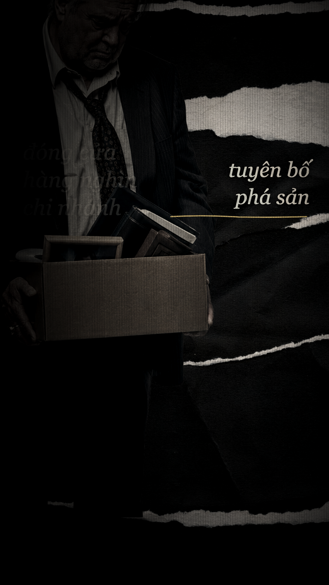
Cùng nhân vật ở Scene 2 nhưng lớn tuổi và thất bại. Máy quay tiến gần, nhân vật trượt sang trái để lộ thông điệp phá sản bên phải.
“Mười năm sau, Blockbuster đóng cửa hàng nghìn chi nhánh và tuyên bố phá sản.”
scene4/boss-defeated.pngshared/bg_black.jpgscene4/closed-sign.jpgscene4/chain-lock.jpgDùng ảnh boss-laughing của Scene 2 làm tham chiếu nhận diện. Tạo cùng một người sau khoảng 10 năm, khuôn mặt vẫn nhận ra rõ.
Nhân vật mặc vest cũ hơi nhăn, tư thế cúi, vai rũ, nét mặt thất bại, toàn thân, ánh sáng lạnh từ một phía, nền trong suốt. Không biến thành một người khác, không đổi màu da, kiểu tóc hoặc cấu trúc khuôn mặt ngoài thay đổi tuổi tác hợp lý.
Tạo thêm hai ảnh tư liệu dọc: biển cửa hàng đóng cửa và dây xích có ổ khóa. Không có logo hoặc chữ giả. Hai ảnh này là asset phụ, chỉ dùng nếu bố cục cần thêm bằng chứng thị giác.Dựng Scene 4 dài 155 frame tại 30 fps cho bản Việt.
Voice-over: “Mười năm sau, Blockbuster đóng cửa hàng nghìn chi nhánh và tuyên bố phá sản.”
Yêu cầu:
1. Dùng bg_black phủ toàn khung, tăng scale chậm từ điểm đặt chân của nhân vật.
2. Đặt boss-defeated ở giữa, neo theo chân để phóng lớn không bị trượt.
3. Tạo bóng từ chính cut-out nhân vật, lật dọc, kéo xiên và blur.
4. Cho các dòng “đóng cửa”, “hàng nghìn”, “chi nhánh” xuất hiện lần lượt bên trái.
5. Sau đó trượt nhân vật sang trái trong khoảng 20 frame và thêm blur ở giữa chuyển động.
6. Hiển thị “tuyên bố phá sản” bên phải, vẽ gạch chân vàng theo thời gian.
7. Giảm bão hòa, tăng tương phản và giữ toàn cảnh u tối.
8. Render frame lúc cả hai cụm chữ đều còn đọc được để kiểm tra.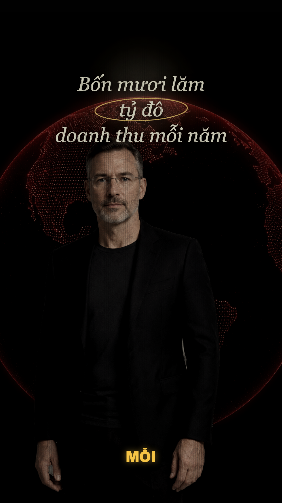
Scene kết có hai phần. Phần đầu cho thấy quy mô và doanh thu. Phần sau chuyển sang ảnh nhân vật trưởng thành, khóa câu chuyện bằng “lời từ chối đắt giá nhất trong lịch sử”.
“Ngày nay, Netflix tạo ra 45 tỷ đô doanh thu mỗi năm, trở thành nền tảng streaming lớn nhất thế giới. Đó chính là lời từ chối đắt giá nhất trong lịch sử.”
scene5/reed-triumph.pngscene5/globe.pngscene6/reed-rich-v2.pngscene1/reed-young.pngDùng reed-young ở Scene 1 làm ảnh tham chiếu nhận diện.
Asset A: cùng người đàn ông sau khoảng 15 đến 20 năm, phong thái thành công nhưng tự nhiên, áo sơ mi hoặc vest tối, toàn thân, ánh sáng viền đỏ vàng, nền trong suốt. Giữ hình dáng mắt, mũi, miệng và đường hàm giống ảnh trẻ.
Asset B: địa cầu dạng các điểm sáng đỏ trên nền đen hoặc alpha, nhìn thấy lục địa, bố cục dọc, không có chữ.
Asset C: cùng nhân vật ở tuổi trưởng thành ngồi trong phòng thu hoặc văn phòng cao cấp, bố cục dọc 9:16, nhìn vào máy ảnh, ánh sáng điện ảnh, vùng trống đủ để đặt headline ở phía trên trái. Không tạo tiền mặt phô trương, không đổi người, không watermark.
Trước khi thay asset, đặt ảnh trẻ và ảnh mới cạnh nhau để kiểm tra nhận diện. Lưu bản được duyệt thành reed-rich-v2.png, không xóa ảnh cũ.Dựng Scene 5 dài 286 frame tại 30 fps cho bản Việt, gồm hai phần trong cùng composition.
Voice-over: “Ngày nay, Netflix tạo ra 45 tỷ đô doanh thu mỗi năm, trở thành nền tảng streaming lớn nhất thế giới. Đó chính là lời từ chối đắt giá nhất trong lịch sử.”
Phần A:
1. Đặt globe trên nền đen, blend screen và tạo quầng sáng nhẹ.
2. Cho reed-triumph đi lên từ đáy bằng spring, giữ cùng nhận diện với Scene 1.
3. Hiển thị lần lượt “Bốn mươi lăm”, “tỷ đô”, “doanh thu mỗi năm”.
4. Vẽ một oval vàng quanh “tỷ đô”.
Phần B:
5. Cross-fade sang reed-rich-v2, ảnh tiến chậm và hết blur trong khoảng 12 frame authored.
6. Hiển thị lần lượt “Lời từ chối”, “đắt giá nhất”, “trong lịch sử.”
7. Dòng cuối dùng màu vàng, các dòng khác trắng ngà.
8. Không dùng reed-rich.jpg nếu v2 đã được duyệt.
9. Render một frame ở phần doanh thu và một frame ở câu kết để kiểm tra nhân vật và chữ.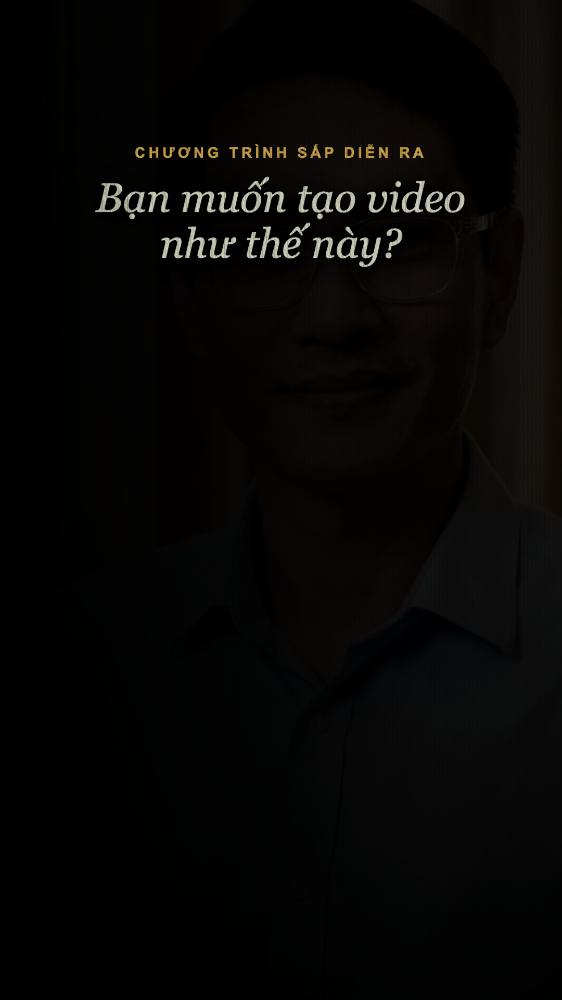
Ảnh ngang mở dưới dạng card để thấy microphone, sau đó chuyển thành portrait phủ màn hình. Nội dung đi qua ba ý: giới thiệu Sơn, quy trình AI, lời mời tham gia Zoom.
“Chào bạn, mình là Sơn. Đây là video được tạo hoàn toàn bởi ChatGPT và hệ thống quy trình Skills. Với khả năng của AI, bạn không cần biên tập mất thời gian như cách truyền thống. Bạn có muốn làm video như thế này, hãy tham gia chương trình Zoom online sắp tới nhé.”
cta/son-studio.jpegcta/vo-cta.wavshared/grain.jpgshared/grunge.jpgChọn một ảnh thật của người dẫn trong phòng thu hoặc không gian làm việc, khung ngang từ ngực trở lên, nhìn vào máy ảnh, có microphone hoặc dấu hiệu đang sản xuất nội dung. Ánh sáng ấm, nền gọn, khuôn mặt rõ.
Ảnh phải đủ độ phân giải để vừa hiển thị toàn cảnh ngang, vừa crop thành portrait 9:16 mà không mất khuôn mặt. Vị trí nhân vật nên lệch nhẹ sang phải để bên trái có chỗ đặt chữ. Không tạo lại khuôn mặt bằng AI nếu đã có ảnh thật được duyệt.Dựng composition CTA dài đúng theo assets/cta/vo-cta.wav, hiện tại là 580 frame tại 30 fps.
Yêu cầu:
1. Đặt Audio trong chính SceneCTA để có thể xem và render CTA riêng.
2. Mở bằng card ảnh ngang có viền trắng ngà và bóng vàng, giữ được microphone trong ảnh.
3. Chuyển từ card sang ảnh portrait phủ toàn màn hình bằng cross-fade, crop ưu tiên khuôn mặt.
4. Hiển thị “CHÀO BẠN” và “Mình là Sơn.” theo câu mở đầu.
5. Tạo chuỗi “Ý TƯỞNG”, “CHATGPT”, “SKILLS”, “VIDEO” vào lần lượt, nối bằng một đường vàng vẽ tay.
6. Hiển thị “MẤT NHIỀU THỜI GIAN”, vẽ nét đỏ gạch bỏ, sau đó bật “NHANH HƠN VỚI AI”.
7. Ở đoạn cuối, làm tối ảnh nền và hiển thị câu hỏi cùng nút vàng “THAM GIA ZOOM ONLINE”.
8. Nút chỉ pulse rất nhẹ, có vòng trắng vẽ quanh theo thời gian.
9. Fade toàn cảnh ở cuối audio. Không cắt chữ hoặc âm tiết cuối.
10. Render frame mở đầu, frame chuỗi quy trình và frame CTA cuối để duyệt.Không chỉ xem preview. File xuất cuối phải được mở và nghe lại từ đầu đến cuối.
Hãy kiểm tra composition ReelVI trước khi render:
1. Xác nhận kích thước 1080 × 1920, 30 fps và tổng thời lượng khớp audio.
2. Kiểm tra mọi asset đều tải được, không có file thiếu.
3. Kiểm tra các con số 50 triệu đô và 45 tỷ đô.
4. Kiểm tra caption khớp voice-over và không che nội dung quan trọng.
5. Render frame đại diện của Scene 1, Scene 2, Scene 3, Scene 4, hai phần Scene 5 và CTA.
6. Nếu tất cả frame đạt, render ReelVI ra out/netflix-reel-vi.mp4.
7. Mở file kết quả, kiểm tra bằng công cụ đọc metadata rằng video có hình, có tiếng, đúng kích thước và thời lượng.
8. Báo rõ đường dẫn file. Không commit video MP4 lên Git.